Mısır Piramitlerinin Yapılış Amacı Nedir?
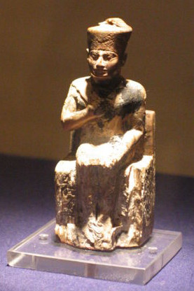
Mısır Kralı Khufu
Mısır Piramitleri Nasıl İnşa Edildi?
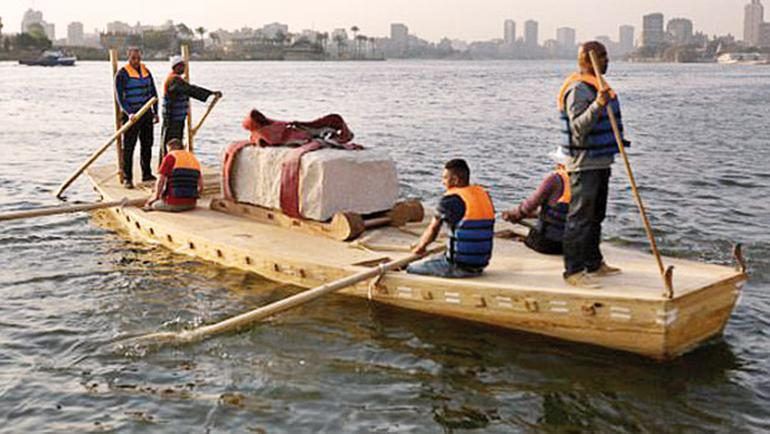
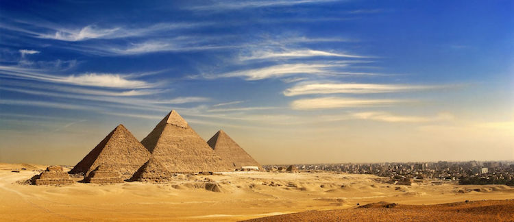
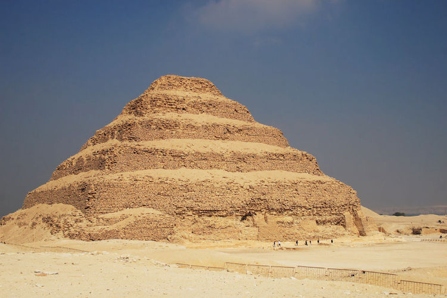
Piramit Taşları Sandallar İle Taşınıyor
Mısır Piramitlerinin İçi Niçin Araştırılamıyor?
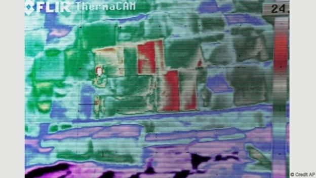
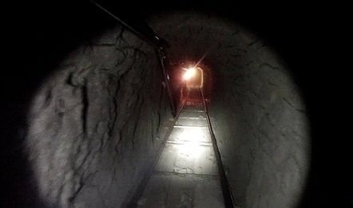
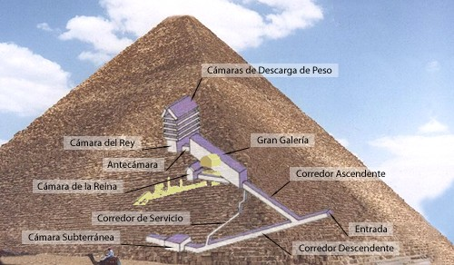
Piramitlerin İç Dizaynı ve Ultrasonik Fotoğrafı
Mısır Piramitleri Türünün Tek Örneği mi?
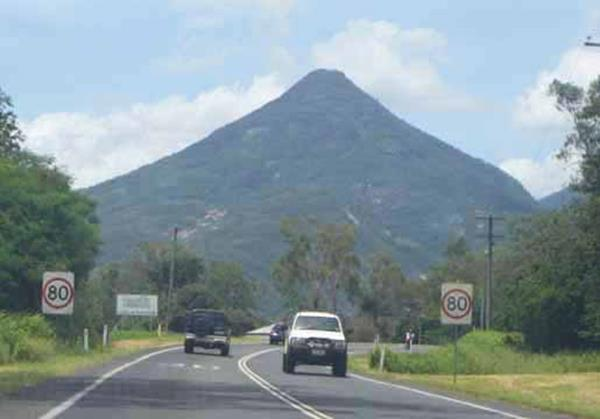
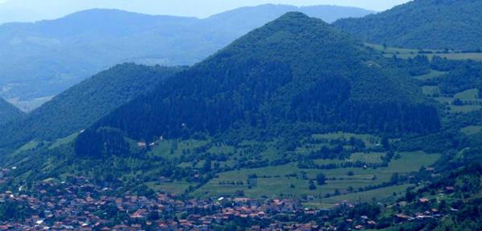
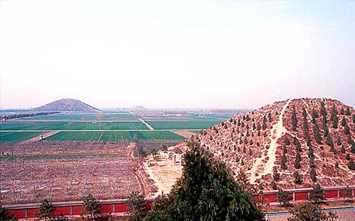
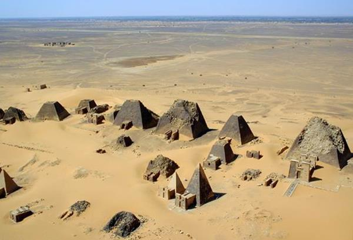
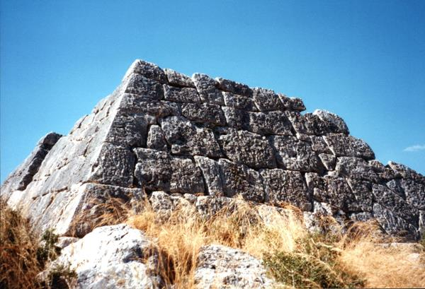
Diğer Piramit Örnekleri
Mumyalama Tekniği
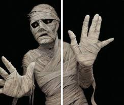
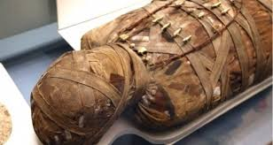
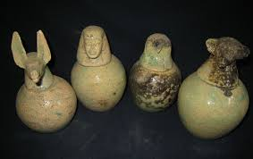
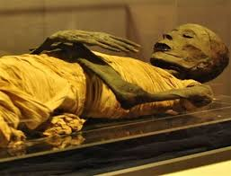
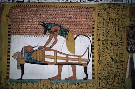
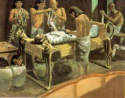
Mumyalama Örnekleri
Doğal Yollarla Mumyalama
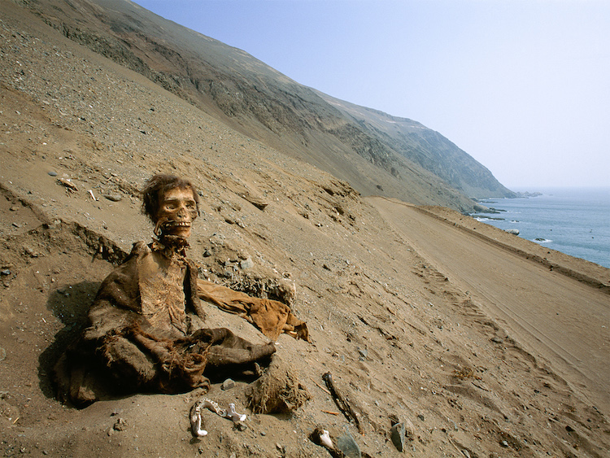
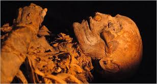
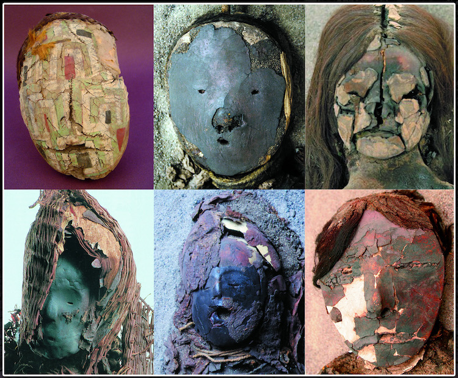
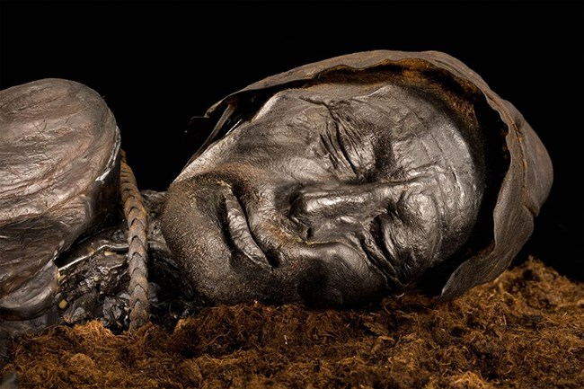
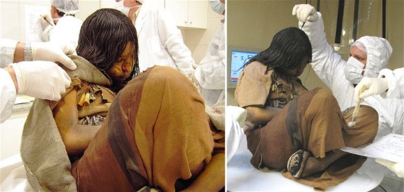
Doğal Yollar İle Mumyalama Örnekleri
Kaynakça:
- https://www.bbc.com/turkce/haberler/2015/11/151116_vert_fut_misir_piramitleri
- https://www.dunyaninyediharikasi.net/tag/misir-piramidin-icinde-ne-var/
- https://www.gzt.com/hayat/misir-piramitleri-hakkinda-bilmeniz-gereken-20-sir-2457278
- https://www.mynet.com/arastirmacilar-gizanin-buyuk-piramidinin-icinde-antik-bir-savunma-sistemi-kesfettiler-110102573629
- http://arkeofili.com/misir-piramitleri-nasil-insa-edildi/
- https://www.cnnturk.com/dunya/piramitlerin-nasil-yapildigi-gizemi-3-bin-yillik-gunlukle-cozuldu?page=14
- https://onedio.com/haber/yillardir-insanlarin-merak-ettigi-soru-misir-piramitleri-nasil-insa-edildi--725964
Hazırlayanlar:
- Ali İlteriş Keskin
- Bahadır Özkan
- Merve Mutlu
- Halise Göktaş
- Abdullah Çelik
- Selim Can Ördek